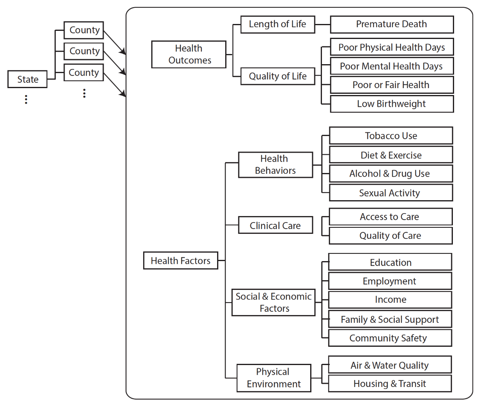
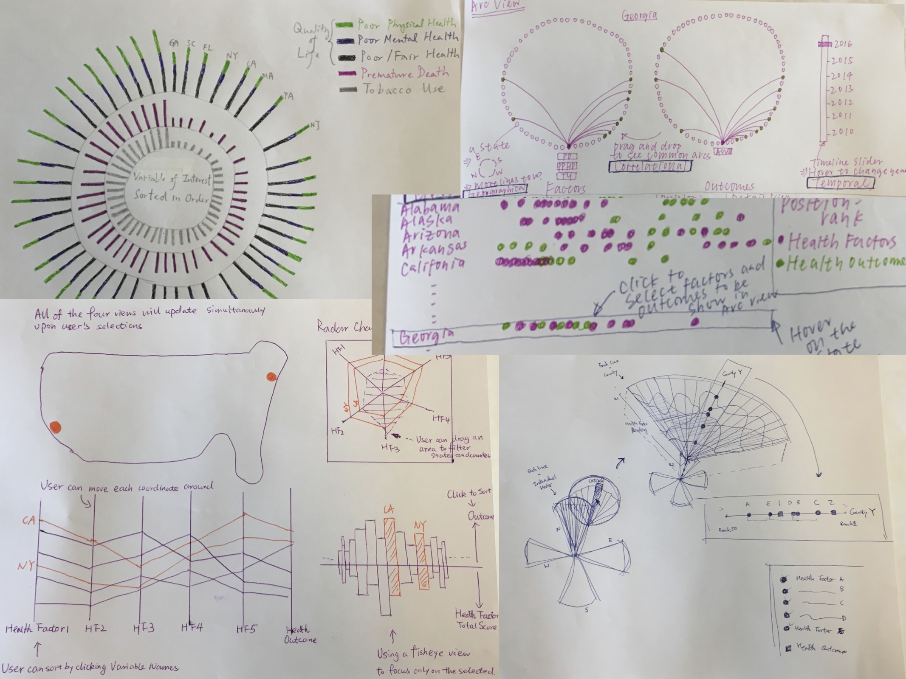

Visualizing Health Disparities in the United States
While billions of tax dollars are spent on healthcare in the US, many Americans still experience unequal access to healthcare. With our visualization, public health researchers and policy makers can make better informed decisions based on an understanding of health outcomes in the context of diverse behavioral, social and environmental determinants of health in any region.
- Project Date: Oct 2016 - Dec 2016
- Affiliations: Georgia Institute of Technology
- Funding: NA
- Collaborators: Po Ming Law, Wing Lam Chong, and Yichen Shen
Background
Today, chronic illnesses ranging from diabetes, HIV, and mental health affect a significant portion of the US population. Although clinical studies have shown statistically relevant associations between a few health risk factors and these illnesses, such as eating behavior and type II diabetes, very little is known about how various social determinants of health (e.g., environmental, socio-economic, etc.) are contributing to the overall quality of health in throughout different regions.
Goal
The goal of this project is to design a visualization tool that would help public health researchers and policy makers make important decisions that would affect the overall health and wellbeing of the people in US.
Methods
- Iterative, user-centered design
We used County Health Rankings National Data from 2010 to 2016. We only included data from 2013-2016 in the visualization due to missing variables and values from 2010-2012. Each state has a number of counties and each county has a hierarchy of attributes.
{kind=link}

There are 24 health variables, consisting of 5 health outcomes and 19 health factors. We computed the ranking of each state from county rankings data per health variable.
{kind=link}

We iteratively generated and evaluated several candidate designs through poster presentations and workshops. Feedback from other graduate students helped solidify our final design choice.
Prototype Design

The resulting visualization focuses on showing the quality of health via relative ranking (out of 51 states) as a measure. Click the image for an interactive demo.
Having a thorough understanding of regional health profiles could, for example, inform important public policies that would ultimately serve underserved communities where there is limited access to healthcare providers, healthy nutrition, and other resources that are essential for people's wellbeing and quality of life. Identifying the health profile of these communities bounded by geographical regions could be an important first step towards reducing health disparities by informing policy level decisions to better allocate mentioned resources. Our visualization would thus support such goal by supporting comparative analysis of different regions by their health factors and outcomes.